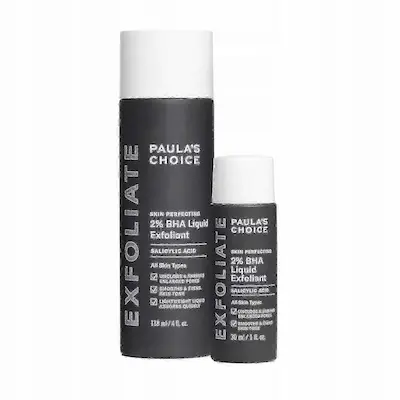
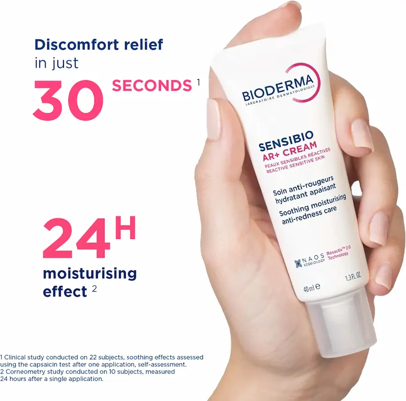
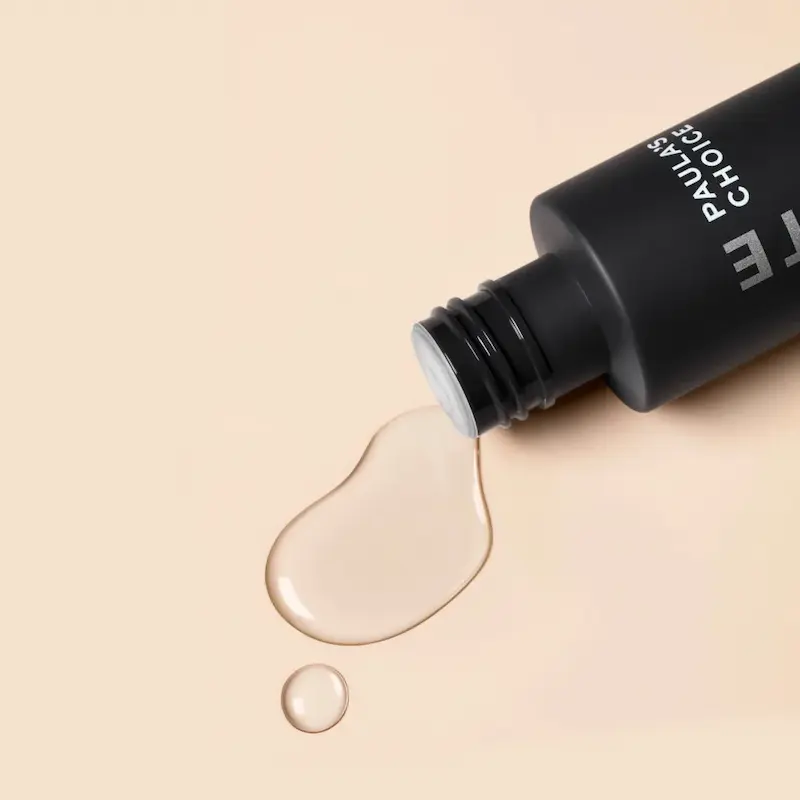

Paula’s Choice 2% BHA Liquid: Standardul de aur în combaterea punctelor negre și a porilor dilatați
Recenzie independentă. Produsul nu este sponsorizat.
Analizăm de ce acest exfoliant a devenit un bestseller mondial pentru tenul gras și problematic: cum combinația de 2% acid salicilic și metilpropandiol permite pătrunderea profundă în pori, dizolvând dopurile de sebum, calmând inflamațiile și uniformizând relieful cutanat fără o acțiune agresivă, redând feței o claritate impecabilă și o luminozitate sănătoasă.

Review Paula’s Choice 2% BHA Liquid Exfoliantr
Echilibrul perfect între curățarea profundă și îngrijirea delicată. Analizăm modul în care formula cu 2% acid salicilic dizolvă vizibil punctele negre, fără a usca pielea și redând porilor capacitatea lor naturală de a se retracta.
De ce merită atenția acest produs?
Paula’s Choice 2% BHA Liquid Exfoliant este un exfoliant chimic pe bază de acid salicilic (BHA), care ajută la curățarea profundă a porilor și la îmbunătățirea texturii pielii. Formula exfoliază delicat celulele moarte, contribuind la reînnoirea pielii și la reducerea punctelor negre.
Spre deosebire de scruburile mecanice, produsul acționează blând, fără a irita pielea. Este potrivit pentru pielea grasă, mixtă și predispusă la acnee, iar în utilizare corectă poate fi integrat și în rutina pielii sensibile.


Echilibrul perfect între curățarea profundă și îngrijirea delicată. Analizăm modul în care formula legendară cu 2% acid salicilic dizolvă vizibil punctele negre, fără a usca pielea și redând porilor capacitatea lor naturală de a se retracta.
Textura și prima utilizare
Spre deosebire de tonicele pe bază de alcool, care pot usca excesiv și irita pielea, Paula’s Choice 2% BHA Liquid are o textură „lichidă” unică, pe bază non-apoasă, care se simte ușor uleioasă la aplicare, dar se absoarbe instantaneu. Nu lasă o senzație lipicioasă, creând un finish neted.
Produsul oferă o senzație imediată de catifelare. Pentru locuitorii orașelor mari din România, precum Bucureștiul, unde praful și poluarea favorizează blocarea rapidă a porilor, acest exfoliant devine un pas indispensabil: acesta pur și simplu „elimină” impuritățile, lăsând tenul proaspăt și pregătindu-l pentru aplicarea produselor de îngrijire ulterioare.
Analiza compoziției: Ce conține?
Inima formulei este acidul salicilic 2% (BHA) într-un interval optim de pH (3.2–3.8). Tocmai această aciditate îi permite să pătrundă prin sebum în interiorul porului, dizolvând biologic „adezivul” care menține celulele moarte și sebumul împreună.
Secretul confortului acestui exfoliant constă în adăugarea Extractului de Ceai Verde — un antioxidant puternic care calmează inflamațiile, alături de Metilpropandiol, care servește drept conductor pentru BHA și, în același timp, hidratează pielea. Această sinergie transformă produsul într-un instrument eficient pentru combaterea acneei și a punctelor negre.
Exfoliere vs. Curățare: cum să îl folosești corect?
Mulți confundă un exfoliant acid cu un tonic obișnuit de curățare. Paula’s Choice 2% BHA Liquid este un produs „leave-on” (fără clătire) cu acțiune activă. Sarcina sa nu este doar de a șterge fața, ci de a pătrunde adânc în pori pentru a dizolva dopul de sebum și a preveni apariția noilor comedoane.
Truc pentru maximizarea efectului: introdu produsul treptat în rutină (începe cu 2-3 aplicări pe săptămână). În România, unde indicele UV este ridicat în mare parte din an, utilizarea acizilor BHA necesită protecție SPF obligatorie pe timpul zilei, deoarece exfolierea face pielea mai susceptibilă la radiațiile ultraviolete. Aplică produsul cu degetele, nu cu un disc de bumbac — acest lucru economisește produsul și reduce frecarea mecanică inutilă.
Cui NU i se potrivește produsul?
Această versiune este creată special pentru tenul gras, mixt și problematic. Persoanelor cu ten foarte uscat sau hipersensibil, textura Liquid li se poate părea prea activă. În aceste cazuri, este recomandat să alegeți versiunea sub formă de gel sau loțiune din aceeași gamă.
Restricție importantă: dacă aveți alergie la aspirină (salicilați), utilizarea acestui produs este contraindicată. De asemenea, dacă scopul tău este combaterea ridurilor profunde și nu a porilor, ar trebui să iei în considerare produse cu acizi AHA (glicolic sau lactic), care acționează la suprafața pielii.
De unde poți cumpăra Paula’s Choice în România?
Brandul Paula’s Choice este extrem de popular în România și poate fi găsit pe site-ul oficial (Paula's Choice România), dar și în magazine specializate precum Notino, Sephora sau în farmacii selecționate.
Înainte de achiziție, recomandăm să verificați prețul pentru Paula’s Choice 2% BHA pe platformele autorizate, deoarece pot exista promoții sezoniere avantajoase. Aveți grijă la produsele contrafăcute de pe marketplace-urile neautorizate, având în vedere popularitatea uriașă a acestui exfoliant!
Unde poți găsi Paula’s Choice 2% BHA Liquid Exfoliant?
Dacă ești în căutarea unui produs eficient pentru curățarea porilor și reducerea punctelor negre, Paula’s Choice 2% BHA Liquid Exfoliant poate fi comandat din magazine online cu livrare în Moldova.
Verifică disponibilitatea și prețul*Linkul este oferit în scop informativ. În cazul unui parteneriat, aici va fi plasat link direct către produs.
Întrebări frecvente despre Paula’s Choice BHA
Tenul va rămâne lipicios după aplicarea exfoliantului?
Imediat după aplicare, poate apărea o ușoară senzație uleioasă — acesta este rezultatul formulei fără alcool. Totuși, 2% BHA Liquid se absoarbe rapid, lăsând pielea fină. Dacă lipiciunea persistă, încercați să aplicați o cantitate mai mică de produs sau folosiți-l doar pe zona T.
Poate produsul să provoace o erupție temporară (coșuri)?
Da, la prima utilizare a BHA poate apărea procesul de „purging” (curățarea porilor). Acidul salicilic scoate impuritățile profunde la suprafață. Acesta este un fenomen temporar, care trece în 2–4 săptămâni, lăsând pielea vizibil mai curată și mai sănătoasă.
Cât de repede voi vedea rezultate în curățarea punctelor negre?
O iluminare superficială a porilor este vizibilă încă de la primele utilizări. Pentru o reducere semnificativă a punctelor negre și micșorarea porilor dilatați, este necesară o utilizare constantă timp de 4–8 săptămâni, ceea ce corespunde ciclului de reînnoire celulară.
Este necesară aplicarea cremei cu protecție solară după exfoliant?
Da, este esențial. Acidul BHA elimină stratul de celule moarte, făcând pielea nouă mai sensibilă la radiațiile ultraviolete. În condițiile verilor însorite din România, utilizarea unei creme de zi cu SPF 30 sau mai mare este obligatorie pentru a evita pigmentarea și pentru a menține rezultatele curățării.